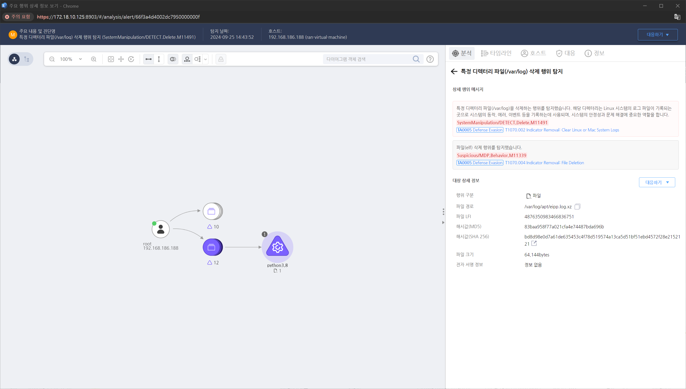

MITRE ATT&CK 액션을 기준으로 대응 방안을 작성
/var/log 디렉터리 파일을 삭제하는 행위를 탐지합니다.

로그가 삭제되거나 수정된 시점을 기준으로 /var/log/audit/audit.log 파일이나 journalctl 명령어로 시스템의 이벤트 로그를 분석하여 비정상적인 로그 삭제 시도를 감지합니다.
무결성 검사 도구(AIDE, Tripwire 등)를 통해 로그 파일이 언제, 어떤 방식으로 삭제되었는지 확인하고, 삭제 전의 상태를 조사합니다.
로그 파일 삭제와 관련된 사용자 계정과 실행된 프로세스를 조사하여, 누가 어떤 권한으로 로그를 삭제했는지 파악합니다. /var/log/secure, /var/log/auth.log 등을 분석하여 비정상적인 루트 권한 사용을 추적합니다.
ps, pstree, top 등의 명령어로 실행 중인 프로세스를 확인하고, 공격자가 사용한 명령어(rm, shred, logrotate 등)를 확인하여 삭제 활동을 분석합니다.
중앙화된 로그 서버를 사용하는 경우, 해당 서버에서 삭제된 로그를 복구할 수 있습니다. 로그 백업이 활성화되어 있다면 삭제된 로그를 복구하여 공격자의 활동을 추적합니다.
디스크 및 메모리 포렌식 도구를 사용하여 삭제된 로그 파일의 흔적을 복구하거나, 메모리에 남아 있는 로그 데이터를 추적하여 공격자의 활동을 복원합니다.
로그 삭제 시점 전후로 발생한 네트워크 활동을 조사하여 공격자가 외부 서버와 통신했는지 여부를 확인합니다. Wireshark나 TCPDump 같은 도구를 사용하여 로그 삭제 후의 네트워크 트래픽을 분석합니다.
로그 삭제 후에도 시스템에 남아 있는 다른 지표(파일 생성, 권한 상승 등)를 조사하여 공격자가 로그 삭제 외에 어떤 활동을 했는지 파악합니다.
로그 삭제가 감지된 시스템을 네트워크에서 격리하여 추가적인 악성 활동을 차단하고, 복구 절차를 진행합니다.
필요할 경우 시스템을 재설정하고, 삭제된 로그를 중앙 로그 서버 또는 백업을 통해 복원합니다.
로그 파일 삭제와 관련된 보안 정책을 재검토하고, 로그 보호 및 무결성 모니터링 절차를 강화합니다.
로그 파일의 중요성과 로그 삭제 시 발생할 수 있는 보안 위협에 대해 사용자들에게 교육하여 로그 관리의 중요성을 인식시키고 비정상적인 로그 삭제 시 행동 요령을 숙지시킵니다.
중앙 로그 서버 사용
로그 보존 기간 연장
파일 무결성 검사 도구 사용
로그 파일 보호
최소 권한 원칙 적용
특권 계정 관리
로그 삭제 탐지 규칙 설정
auditd를 통한 파일 액세스 감시
로그 파일 암호화
로그 파일에 대한 무결성 보호
Action 실행시 함꼐 영향을 받는 다른 Techniqes
| ATT&CK |
|---|
| T1059.004 |
| D3FEND |
|---|
| D3-FE File Eviction |